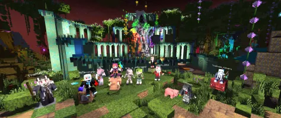

首先要感谢大家相聚在一起，共同探究有关Minecraft服务器插件开发的相关问题。我是柠萌，将会负责本套文章的主要撰写工作。2026年2月26日凌晨一点零一，我开始着手编写本系列第一部分，也就是这篇文章。
当我开始编辑这篇文档时，方块维度开发文档总框架仍然处于一开始的待编辑状态，似乎没有过多改变。但是毕竟一个长期的任务或者一个技术性较强的工作要脚踏实地一步一步地完成嘛...所以也许我们在正式开始之前不妨给自己准备一杯Coffee或者任意打开一个METの奇妙工具或项目，在一个相对轻松的氛围里共同探讨有关问题owob。
慢就是快，没错！做好每一步当前的工作才能有利于后续的工作更好地进行。所以本文档整体将基于我之前的Java教程对BukkitAPI进行深入，后续如果我有余力的话可能会去学习一下Kotlin等其他综合运用方式，暂时不能直接在这里画饼qwq！
当然在开始一个项目之前进行充分的调研是必不可少的，我先后在各种平台上学习了有关知识，例如Udemy，Bilibili，Youtube，又或是CSDN，腾讯开发者平台或者一些个人开发者的教程，但是都感到过于简单并且多是注重理论而缺少实践研究，这对于整个Minecraft服务器生存环境和创新环境是不利因素。所以为我决定尽我之力，为团队贡献一套合适的教程。
我们将基于IntelliJ IDEA平台进行学习和研究，当然如果你尝试使用Eclipse等其他IDE工具也不是不可以。但是我认为IntelliJ是相对比较友好的。尽管其初始化环境配置可能稍微有些麻烦，但是其高度自定义的UI界面和丰富的IDE插件支持会为我们后续的Java研究和插件开发提供不少帮助！
本文作为序言部分只是正式开始之前的一些题外话，更多的问题我们可以在后续具体操作的时候再行研究，希望我能有这个精力和足够的耐心和坚持能把这个文档尽量写完。本人技术不精，时间仓促，如有不妥或错误之处欢迎批评指正！
Ampura16
@BlockLand Realms

法律信息
「本教程」指 BlockLand Realms 团队网站下的全部 HTML 页面以及团队各成员的 Github 仓库下的所有 Markdown 文件。链接到上述 HTML 页面中的样式表、字体、JavaScript 脚本等内容和上述 Git 仓库中非 Markdown 文件不属于「本教程」，它们适用单独的许可条款。「本站点」指 met6.top 网站下的全部 HTML 页面。
- 本教程文字部分使用 知识共享署名 3.0 中国大陆许可协议 进行许可。对于不适用该许可的部分，将适用其单独的许可条款。
- 本教程中少量游戏截图来自于游戏 《Minecraft: Java Edition》（《我的世界：Java 版》），根据其开发公司 Mojang Studios AB 在许可条款中的相关说明，我们拥有将这些图片上传到第三方图片网站并链接到本站点的权利，截图由 Brmc 团队制作。
- Minecraft® 是瑞典 Mojang Studios AB 公司的商标。本教程不是 Minecraft 官方产品，不是来自 Minecraft 并且未经 Minecraft 认可。本教程与 Mojang Studios AB 没有关联，也不是来自 Mojang Studios AB。本教程与美国 Microsoft（微软）公司没有关联。
- 本教程与 GitHub 公司没有关联。
- My Little Pony®、Friendship Is Magic™ 和 Equestria Girls™ 是美国 Hasbro（孩之宝）公司的商标或注册商标。本教程与 Hasbro 公司没有关联。
- Java™ 是美国 Oracle（甲骨文）公司的商标。本教程与 Oracle 公司没有关联。
- Eclipse® 是 Eclipse Foundation 的商标。本教程与 Eclipse Foundation 没有关联。
- 本教程与 JetBrains s.r.o. 没有关联。
- 本教程仅用于学习交流，其中任何内容均未被也不将被用于盈利。
- 「网易云音乐」服务是广州网易计算机系统有限公司提供的。该服务属于广州网易计算机系统有限公司。本教程的作者不能亦不会保证该服务的正常运行。
- Spigot 服务端分发/下载服务是由 GetBukkit 组织提供的。
- 本教程中提供的开发工具 AdoptOpenJDK、IntelliJ IDEA Community 以及使用到的软件 MySQL Community 等均是自由软件或在其许可条款中允许了我们将其链接到本站点。所有的链接都指向原始站点，本站点没有分发或存储任何相关文件。